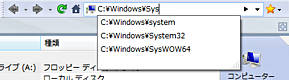

ナビバーでは、常に現在開いているフォルダの実際のフォルダ名を表示しています。
この表示欄に直接フォルダ名を入力して、Enterキー
を押下して確定することで、入力したフォルダを即座に開くことが可能です。
文字入力の際にはフォルダ名の自動補完機能が働きますので、１文字入力の都度、
入力文字にマッチしたフォルダ名がリストされます。

フォルダ名以外に環境文字列で指定のフォルダにアクセスすることが可能です。
また、ナビバーのドロップダウンボタンをマウスでクリックすると、 直近にアクセスしたフォルダの一覧がリストアップされます。 この表示されたリストの中から選択することも可能です。